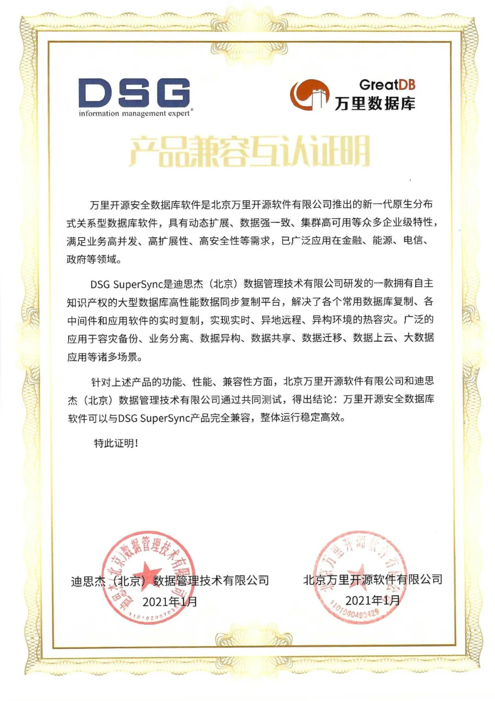

生态|推进数据领域强强联合，万里数据库与迪思杰完成兼容适配
近日，经北京万里开源软件有限公司和迪思杰（北京）数据管理技术有限公司通过共同测试，万里开源安全数据库软件可以与迪思杰DSG SuperSync产品完全兼容，整体运行稳定高效，可为企业级应用提供全面保障。

关于迪思杰
DSG SuperSync是迪思杰（北京）数据管理技术有限公司研发的一款拥有自主知识产权的大型数据库高性能数据同步复制平台，解决了各个常用数据库复制、各中间件和应用软件的实时复制，实现实时、异地远程、异构环境的热容灾。广泛的应用于容灾备份、业务分离、数据异构、数据共享、数据迁移、数据上云、大数据应用等诸多场景。
关于万里数据库
万里开源安全数据库软件是北京万里开源软件有限公司推出的新一代原生分布式关系型数据库软件，具有动态扩展、数据强一致、集群高可用等众多企业级特性，满足业务高并发、高扩展性、高安全性等需求，已广泛应用在金融、能源、电信、政府等领域。
展望
此次兼容性认证，标志着万里数据库具有良好的适配性，可以很好地适配迪思杰的数据同步复制平台，同时也为双方在数据领域的强强联合夯实基础。
万里数据库通过与迪思杰的数据库备份、数据库容灾、数据实时复制转换等一体化的解决方案能力相结合，有助于为企业提供更全面的数据库灾备方案、异构数据库迁移、数据同步等解决方案，为企业信息技术转型提供更强有力的保障。
推荐阅读1. 老鱼笔记 | 万里数据库是一家怎样的公司？
2. 3分钟了解万里数据库的20203. 万里数据库GreatDB再度发力，荣获“金鼎奖”4. 万里数据库与联通在线沃音乐携手 共建海纳数据智能联合研发实验室
5. 万里开源中标中移动OLTP数据库联合创新项目
万里数据库简介
万里数据库是北京万里开源软件有限公司自主研发的新一代分布式数据库，经过10余年的应用验证，在功能、性能、稳定性、易用性等方面均处于行业领先水平，历经500多个业务场景的锤炼，已广泛应用于金融、能源、通信、政府、交通等多个行业。

扫码二维码
关注公众号